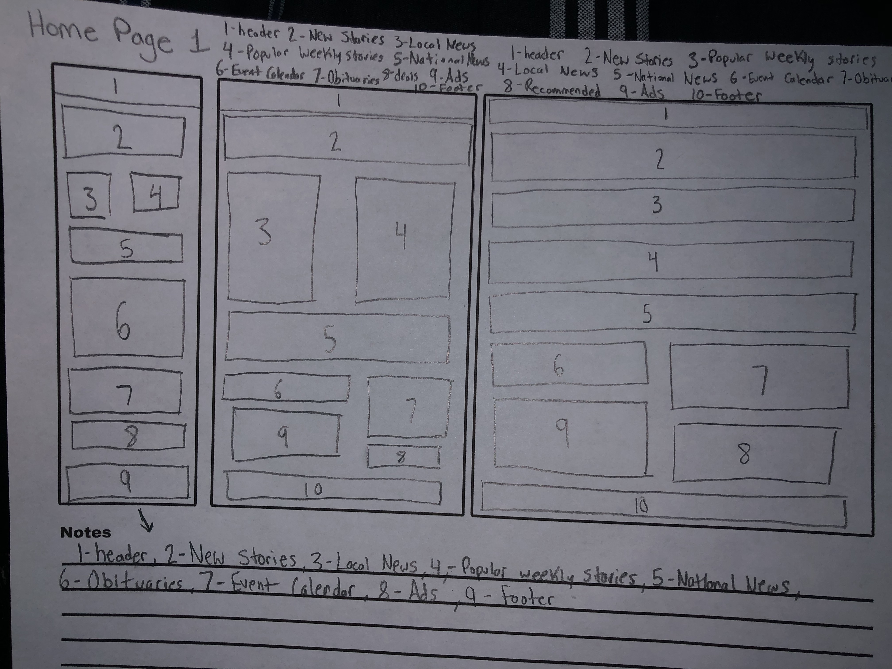
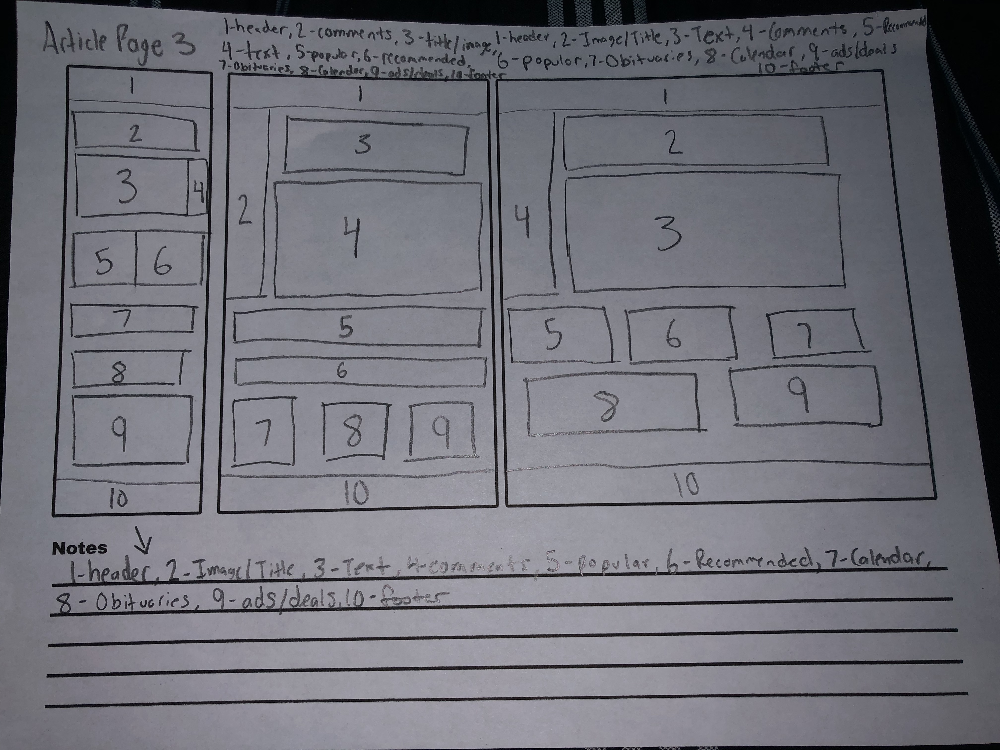

Social Media.
kdolphin2284


Allied News is a news platform catering to the Grove City, Lakeview, Mercer, and Slippery Rock areas. The site posts updates to local and national events, as well as talking about different issues in the world.
I chose to redesign the Allied News website because of how cluttered the home page was. The page had popular news stories at the top, and national news and other stories underneath. While this sounds like an ordinary news page, there were constant huge spaces between stories and categories which held advertisements on advertisements. Having a lot of ads on a page is not necessarily a bad thing, but if they aren’t organized sufficiently, then it makes the website look ugly. My original plan was to reorganize the ads, get rid of random spacings between articles and sections, and make the site look more “modern”.
These are screenshots of the original home page of Allied News, as well as an article page on the computer. The tablet version looks identical, just slightly smaller, while the smartphone is very messy. The layout is incredibly crammed, and while it doesn’t have huge spaces between the different sections, it needs to be renovated. I started my redesign process off by creating wireframes of how the layout of the site could look.
 These are the original wireframes that I created for my redesign. I got rid of all of the awkward spacing in between each article and brought everything closer together. One thing that I did do was delete most of the ads and have one area where the ads would circulate through, kind of like a carousal. I sought insight for my design from my professor, who then told me that I wasn’t allowed to compress or delete ads, so in my final design I decided to space out the ads accordingly, while still keeping the spacing between articles close.
These are my final designs for the computer, tablet, and mobile platforms. I added the advertisements back into the redesign, while keeping everything spaced close together. I added a new red theme, and made the site seem more user friendly and modern.